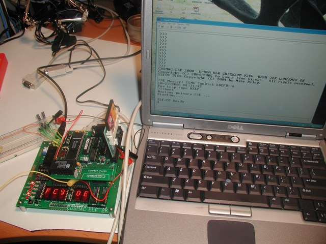

Spare Time Gizmo's ELF2K running Mike Riley's ELFOS

The mess on the left is a breadboarded MAX232 RS232 interface wired into the DS275 socket (Still waiting for that chip to arrive)
I didn't have the guts to solder in the CF card connector, I went with the IDE interface (for now :-) )